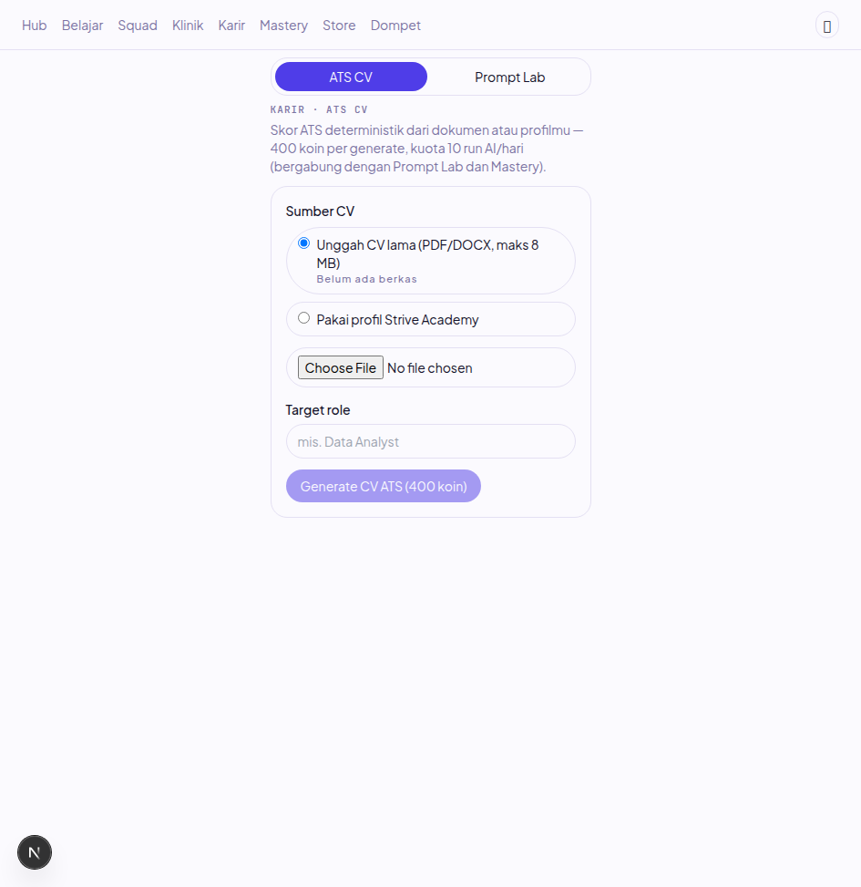
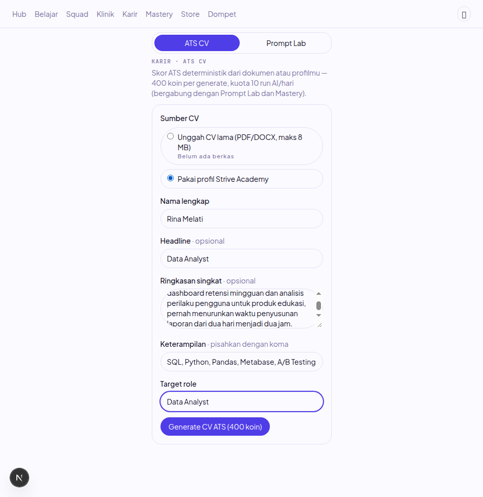
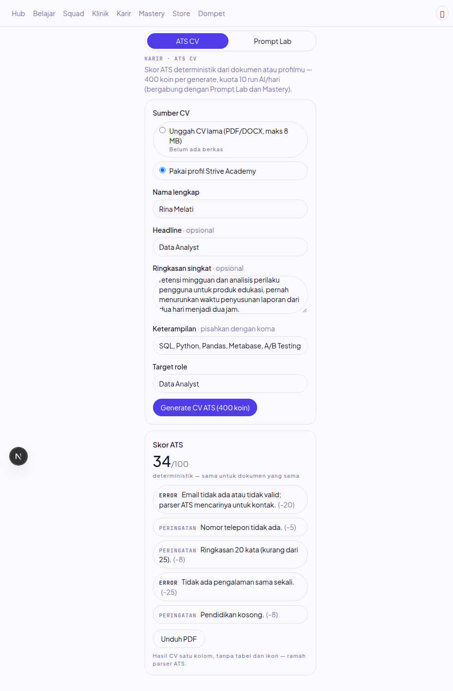
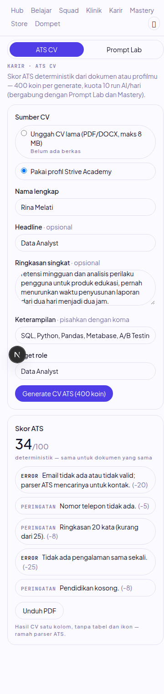
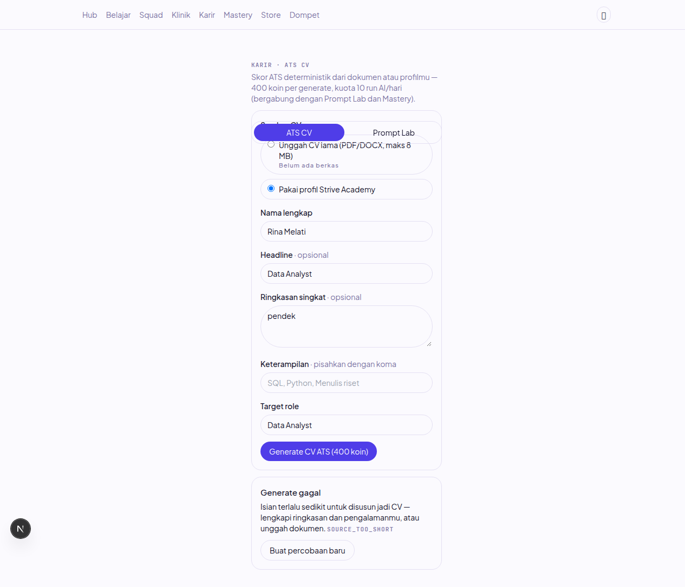
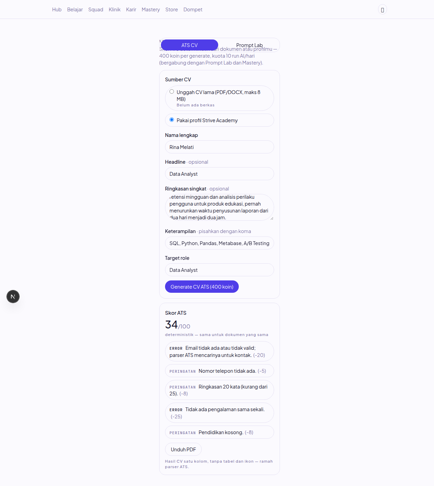

Verifikasi ujung-ke-ujung fitur generate CV ATS: dari form di browser, 202 + polling, worker, layanan AI Python, skor deterministik, sampai PDF tersimpan dan bisa diunduh. Semua bukti di bawah diambil dari stack yang benar-benar berjalan, bukan dari membaca kode.
Fitur CV builder (PRD §7 E8, §13.2) diverifikasi dalam dua lapis. Lapis test: 25 test integrasi khusus CV, 56 test integrasi worker (worker-boot + dispatch + cv-builder), 177 test web, 145 test pytest layanan AI, lima gerbang (lint, typecheck, test, build, audit-deps) hijau dalam satu rangkaian. Lapis browser: stack e2e lokal dijalankan penuh dan golden path dijalani dari klik sampai PDF.
Stack e2e memakai LLM stub (bentuk respons identik OpenAI) lewat setelan baru
LLM_BASE_URL, jadi alur LLM-nya nyata sampai ke pemanggilan klien
(bukti di log stub), tanpa kunci vendor. Skor ATS dihitung DETERMINISTIK di
server: stub yang sama menghasilkan skor sama (34/100) di dua percobaan
berbeda. Nilai 34 itu sah, bukan kegagalan: penghapus hasil halusinasi
(validasi_keterlacapan) membuang kontak yang tidak ada di sumber,
dan ATS menghukumnya.
Verifikasi ini menemukan DUA bug yang lolos semua test tapi ketahuan di stack nyata, keduanya langsung diperbaiki dengan test penjaga baru (detail di bagian 4).
| Skenario | Aksi | Expected | Hasil | Bukti |
|---|---|---|---|---|
| Golden path, sumber profil | Isi nama (prefill), headline, ringkasan, keterampilan, target role, klik Generate | 202 + job_id, polling 2,5 dtk, hasil skor + temuan + tautan PDF | SESUAI (dua kali, skor sama 34/100) | gambar 02, 03, 06; POST 202 dan poll 200 di network |
| Skor + temuan hanya dari server | Baca panel hasil | Skor X/100, temuan berlabel severity dengan penalti, jumlah penalti konsisten dengan skor | 34/100; lima temuan, 20+5+8+25+8=66 | gambar 03 |
| Unduh PDF | Klik tautan Unduh PDF (signed URL MinIO, kedaluwarsa 900 dtk) | PDF asli tersimpan | HTTP 200, 1780 byte, PDF 1.3 satu halaman | kunci cvs/{job}.pdf di cv_documents |
| Gagal: sumber terlalu pendek | Ringkasan "pendek" tanpa keterampilan, Generate | 202, job gagal SOURCE_TOO_SHORT, koin dilepas penuh, UI menampilkan pesan + tombol percobaan baru |
SESUAI; ledger hold -400 lalu release +400 | gambar 05; job 993e0091 |
| Pemulihan setelah gagal | Klik "Buat percobaan baru", isi ulang lengkap, Generate | Percobaan baru (job id BARU, bukan replay), sukses | job 65ede41b, done 34/100 | gambar 06 |
| Idempotensi setelah hasil (regresi) | Generate kedua setelah hasil tiba (pra-perbaikan) | Percobaan baru dengan job id baru | DULU REPLAY job lama (job id sama di network log) → diperbaiki di 654a10f | network #35 dan #37: job_id sama fdb9ca02 |
| Tanpa sesi | Buka /career tanpa cookie | 401 untuk semua rute data, UI tetap hidup | 5 request 401 pra-login, semuanya 200 setelah cookie | network #11-15 vs #28+ |
| Responsif 375px | Viewport 375×812 | Tanpa scroll horizontal, tanpa elemen terpotong | scrollWidth 360 = clientWidth 360 | gambar 04 |
| Console dan network | Amati seluruh sesi | Nol error console, nol 4xx/5xx setelah login | 45 pesan console, 0 error, 0 warning | log sesi Playwright |
| Pindah tab | Tab ATS CV → Prompt Lab → ATS CV | Kedua panel tetap terpasang, hasil CV selamat | hasil 34/100 tetap tampil | snapshots sesi |
| Unggah berkas (integrasi, bukan browser) | POST dengan PDF magic valid; file >8 MB; file .txt | PDF diterima; FILE_TOO_LARGE; UNSUPPORTED_FILE_TYPE | 25/25 integrasi hijau (trio validasi) | test/cv-builder.integration.spec.ts |
| Kuota harian ke-11 | 10 percobaan AI lalu ke-11 (integrasi) | 429 DAILY_AI_QUOTA_EXCEEDED, enqueue tidak terjadi | CV-9 hijau (add dipanggil tepat 10×) | idem |
| Konflik kunci paralel | Dua POST bersamaan, kunci sama (integrasi) | Satu job, satu hold -400, enqueue sekali; sisanya 409 atau replay | Hijau (dua hasil sah diterima, invariant dipegang) | idem |
Urutan ledger seluruh sesi (satu user, 1000 koin awal):
adjust +1000 (semai) · hold -400 @5c213596 (gagal pra-perbaikan, ORPHAN:
hook belum diekspor, dikompensasi +400 sebagai reset e2e) ·
hold -400 @a22a1642 → release +400 (gagal SOURCE_TOO_SHORT, pasca-perbaikan) ·
hold -400 @c9a5034f (sukses, settled) · hold -400 @fdb9ca02 (sukses browser,
settled) · hold -400 @993e0091 → release +400 (gagal browser, pasca-perbaikan) ·
hold -400 @65ede41b (sukses percobaan ulang, settled)
Hasil akhir: saldo 200 (3 generate sukses dibayar 1200 + 1 orphan pra-perbaikan),
3 baris cv_documents, 3 audit coin.settle, 2 audit
coin.release. Saldo, ledger, dan audit konsisten. Baris orphan
@5c213596 adalah BUKTI bug pra-perbaikan, dibiarkan di DB e2e sebagai bukti
dan dikompensasi lewat entri adjust (ledger append-only, DELETE
ditolak trigger, dan itu memang aturannya).
| Bug | Pemicu | Gejala | Akar masalah | Expected setelah fix | Cara reproduce |
|---|---|---|---|---|---|
| Hook finalisasi tidak pernah berjalan (3a0c169) | Worker memproses job ats_cv, kondisi apa pun | Job done TANPA cv_documents, tanpa settle; job gagal TANPA release; saldo 600 menggantung | Binding PENYELESAI_JOB_AI tidak masuk exports CareerModule sehingga @Optional() dispatcher menerima array kosong; ditambah useExisting mengikat SATU instance padahal kontrak array |
Setiap job terminal menjalankan hook: sukses = cv_documents + settle + PDF; gagal = release | Stack e2e nyata, atau lihat worker-boot baru: menuntut EFEK hook + bentuk array token |
| Replay diam-diam percobaan kedua (654a10f) | Generate kedua setelah hasil tiba, form diedit | 202 dengan job_id LAMA, hasil lama tampil lagi, sunyi tanpa biaya dan tanpa proses ulang | Kunci idempotensi hanya diputar oleh tombol "coba lagi"; Generate langsung dari keadaan terminal ikut memakai kunci lama (server wajib replay per kontrak idempotensi) | Percobaan baru = kunci baru; dari idle (gagal mulai) kunci dipertahankan karena percobaan sama | Browser: generate, tunggu hasil, edit ringkasan, generate lagi; bandingkan job_id di network |
id; varian en belum diuji e2e.POLLING_TIMEOUT tidak dipicu di browser (job selesai ~2 detik, jauh di bawah batas 5 menit); perilakunya diuji di level mesin (spec cv-builder).pnpm lint OK · pnpm typecheck OK · pnpm test OK (contracts 6, web 178, api 362) · test:integration OK 631/631 lintas 52 berkas (milik AI-07: worker-boot 4, ai-dispatch 27, cv-builder 27) · pytest 149 OK · pnpm build OK · audit-deps OK (0 baru, 0 basi).Audit agent-security atas diff AI-07 dijalankan 9 Nov 2026. Ringkasnya: 0 temuan kritis, 0 tinggi. Empat temuan di bawah kritis seluruhnya sudah diperbaiki dan dikunci test di komit dad03f9 (sebelum rebase: 06ca171) sebelum PR dibuka, jadi reviewer melihat kode yang sudah bersih, bukan janji perbaikan.
| ID | Tingkat | Masalah | Perbaikan (semua di dad03f9) |
|---|---|---|---|
| T1 | sedang | Kontrak Node menamai field pengalaman judul, layanan Python menuntut posisi. Klien yang setia kontrak pasti ditolak 422 deterministik, dan penolakan itu terjadi SETELAH koin di-hold dan kuota terhitung: pengguna kehilangan satu percobaan tanpa kesalahan apa pun. | Kontrak dan service Node seragam memakai posisi. Test interop baru: profil bentuk kontrak end-to-end diterima 202 dan tersonggok utuh ke ai_jobs.input. |
| T2 | rendah | Base64 berseling newline (hasil transport MIME) lolos regex Node tapi ditolak b64decode(validate=True) Python: job gagal di worker padahal unggahan sah. | Node menormalkan [\r\n] sebelum validasi dan menyimpan versi bersih. Test: PDF yang dibungkus newline tiap 20 karakter tetap diterima, isi tersimpan tanpa sisipan. |
| T3 | rendah | website (kontak) dan jurusan (pendidikan) dihilangkan diam-diam oleh model Python: data pengguna menguap tanpa jejak. | Model Python menampung keduanya dan ikut menyusun teks sumber. Test test_susun_dari_profil_bentuk_kontrak_node mengunci keduanya muncul di teks. |
| C1 | info | LLM_BASE_URL (setelan stub untuk verifikasi lokal) bisa lolos ke produksi dan mengarahkan trafik LLM ke host arbitrer. | Validator pydantic menolak nilai non-default saat NODE_ENV=production (gagal-tertutup). 3 test: produksi non-default ditolak, default lolos, development bebas. .env.example diberi peringatan. |
Wilayah yang diperiksa dan bersih: injection dan XSS (semua input lewat zod + parameterized query), IDOR (upload di-resolve server lewat kepemilikan, storage key tidak pernah keluar), CSRF dan session (cookie better-auth, cek Origin), logika koin (hold→settle/release idempoten, satu jalur lewat CoinLedgerService), dekompresi (penjaga zip-bomb dan cap halaman sudah hidup dari M1), secret (nol hardcoded, .env tidak ter-track), dan storage (URL PDF selalu presigned, berumur pendek).





